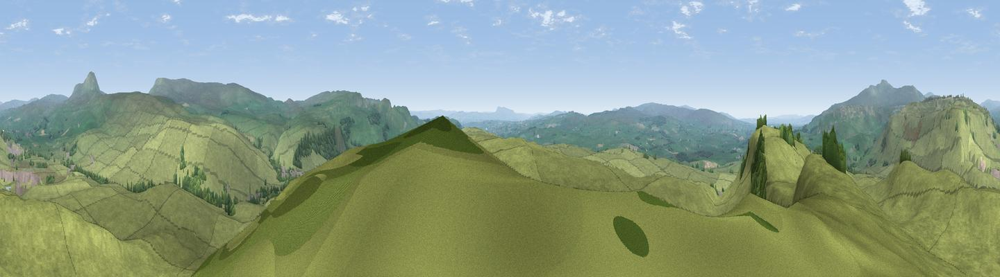

Smearsett Scar
#8747 in England · top 16% of its area beats it · near StainforthWhere it is
The exact computed spot (SD 80238 67825). Click the marker for map links.
The view, rendered

A 360° render of this exact spot computed from the terrain model, tree cover and land cover — summer colours, afternoon light, calibrated against photographs of famous viewpoints. Real trees, hedges and buildings will differ in detail.
The panorama
Grey silhouette: terrain skyline in each direction (720 bearings, Earth curvature and refraction included). Dashed green: skyline with trees (+15 m) and buildings (+8 m) as obstacles. Blue strip: how far the ground is visible on each bearing.
Where the view opens
Wedge length = distance to the farthest visible ground on that bearing (vegetation-aware). Rings at 10, 25 and 50 km.
What fills the view
98% grassland · 2% woodland
Angular shares of the visible panorama (visual magnitude), not map area. Landscape diversity 0.05 (0–1 Shannon).
Key numbers
More beautiful places nearby
The staircase of upgrades: each row has a higher view potential than everything closer. Driving times are estimates from straight-line distance, calibrated against real road routing — check an actual route before setting out.
| Place | Direction | Drive | Score |
|---|---|---|---|
| Viewpoint near Austwick | WNW · 5 km | ~10 min | 67.7 |
| Viewpoint near Langcliffe | SE · 5 km | ~10 min | 73.1 |
| Warrendale Knotts | SE · 5 km | ~11 min | 73.7 |
| Viewpoint near Horton in Ribblesdale | NNE · 6 km | ~13 min | 74.2 |
| Pen-y-ghent | NNE · 7 km | ~14 min | 75.8 |
| Little Ingleborough | NW · 8 km | ~17 min | 78.8 |
| Viewpoint near Ingleton | NW · 9 km | ~18 min | 79.5 |
| Whernside | NNW · 15 km | ~27 min | 79.9 |
54.10593, -2.30374 · source: dobih hill · position refined by local search. Computed location — check access rights before visiting.